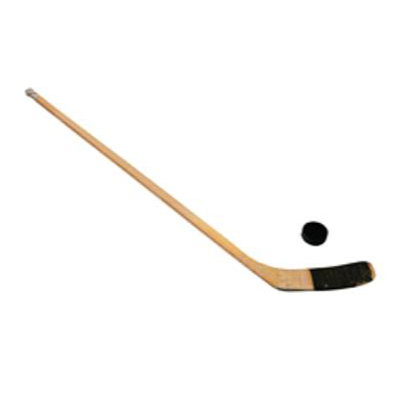
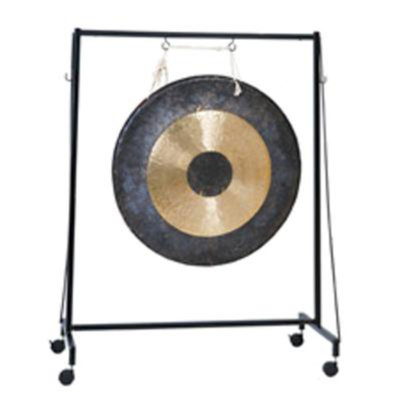
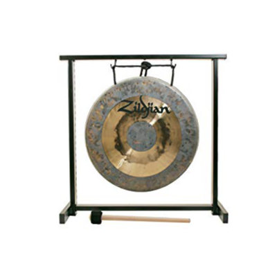

<!DOCTYPE html>
<html>
 <!--
  Task: Perceptual-baseline control task in cMST
  Author: Craig Stark
  Forked from cont_omst.html and pcon_gs_v2.html and pcon_instr_gs.html on 6/22/23
  

  Optional parameters:
  In the JATOS versions, these come in via jatos.studySessionData but we also can pass
  them in as URL parameters.  Check the code as the actual variable names differ a touch b/n versions. 
  (these are the JATOS ones)

  Optional parameters:
  [sid=##]: Subject ID -- used for data file name (default=1234)
  [resp_mode=X]: Response mode -- set to 'keyboard' to use keyboard, anything else to use buttons (default=buttons)
  [pcrand=#]: Should which stimuli are shown as repeats vs. lures be randomized? (default=0, fixed)

  Note, if you use the "baseurl" bit to specify a webserver with the images, you'll need to update the Content-Security-Policy below
  For example, I use:   img-src 'self' https://starklab.bio.uci.edu data: content:;
-->

<head>
 <meta http-equiv="Content-Security-Policy" content="default-src 'self' data: gap:  'unsafe-inline' 'unsafe-eval' 
        https://fonts.gstatic.com ; 
      style-src 'self' 'unsafe-inline' https://fonts.googleapis.com/css; media-src *; 
      img-src 'self' data: content:;">
      
  <script type="text/javascript" src="jatos.js"></script>
  <script type="text/javascript" src="js/index.js"></script>
  <script src="js/jquery-3.1.1.min.js"></script>
  <script src="js/jspsych_731/dist/jspsych.js"></script>
  <script src="js/jspsych_731/dist/plugin-html-keyboard-response.js"></script>
  <script src="js/jspsych_731/dist/plugin-image-keyboard-response.js"></script>
  <script src="js/jspsych_731/dist/plugin-html-button-response.js"></script>
  <script src="js/jspsych_731/dist/plugin-image-button-response.js"></script>
  <script src="js/jspsych_731/dist/plugin-animation.js"></script>
  <script src="js/jspsych_731/dist/plugin-preload.js"></script>
  <link rel="stylesheet" href="css/jspsych.css"></link>
  <style>
    .jspsych-display-element {
      font-size: 200%;
    }
    .jspsych-btn {
      font-size: 150%;
    }
    .dimtext {
        color: #F0f0F0;
    }
  </style>
</head>
<body></body>

<script>
function waitFor(conditionFunction) {
  const poll = resolve => {
  if(conditionFunction()) resolve();
    else setTimeout(_ => poll(resolve), 400);
  }
  return new Promise(poll)
}


jatos.onLoad(async function() {
  //baseurl='https://starklab.bio.uci.edu/mst/'; // How we'll get images, videos, etc.  Set to empty string to use local folders
  baseurl=''; // How we'll get images, videos, etc.  Set to empty string to use local folders
  var sid=jatos.studySessionData['sid'];
  if (typeof sid === 'undefined') {
    sid=1234;
  }
  var resp_mode='button';
  if (jatos.studySessionData['resp_mode'] == 'keyboard') {
    resp_mode='keyboard';
  }
  var randomize=false;
  if (jatos.studySessionData['pcrand'] == 1) {
    randomize = true;
  }


//   const preload_fnames = new Array(trial_stim.length)
//   for (var i=0; i<trial_stim.length; i++) {  // Make our Set X_rs be SetX_rs
//     trial_stim[i].image=baseurl+trial_stim[i].image.replace("Set ","Set");
//     preload_fnames[i]=trial_stim[i].image;
//   }
  
  
  // START OF CODE THAT SHOULD BE CONSTANT REGARDLESS OF JATOS / CORDOVA
  const phasename='pcon';

  var jsPsych = initJsPsych({on_finish: function() {
    if (0) { jsPsych.data.displayData(); }
      else {
        var order=jatos.studySessionData["order"];
        jatos.studySessionData["taskindex"] += 1;
        var expdata = jsPsych.data.get().json();
        // Submit results to JATOS and queue the end or next task
        if (typeof order === 'undefined' || order.length == jatos.studySessionData["taskindex"]) { 
          // we're done
          // Check if this came from SONA - should have URL.sid and .sona
          if (typeof jatos.urlQueryParameters.sid === 'undefined' || typeof jatos.urlQueryParameters.sona === 'undefined' ||
              typeof jatos.studyJsonInput['experiment_id'] === 'undefined' || typeof jatos.studyJsonInput['credit_token'] === 'undefined') {
            jatos.submitResultData(expdata,jatos.endStudy);
          }
          else {
            // This is here for SONA experiments.  You'll want to tweak it for your own online setup, but this gives you the return to them for credit
            var redirect='https://uci.sona-systems.com/webstudy_credit.aspx?experiment_id='+jatos.studyJsonInput['experiment_id']+
              '&credit_token='+jatos.studyJsonInput['credit_token']+'&survey_code='+jatos.urlQueryParameters.sid;
            jatos.endStudyAndRedirect(redirect,expdata);
          }
        }
        else {
          // submit and start the next
          jatos.submitResultData(expdata, () => { jatos.startComponentByPos(order[jatos.studySessionData["taskindex"]]) });
        }
      }
    }
  });

  jsPsych.data.addProperties({
    task: phasename,
    subject: sid,
    randomize: randomize
  });


  // Setup prompts and response options based on keyboard/button and 2/3 choices
  var instr_choice=[' ']; // 32 is space
  var instr_txt='<i>spacebar</i>';
  var trial_txt='<b>S</b>ame or <b>D</b>ifferent';
  if (resp_mode == 'button') {
      instr_choice=['OK'];
      instr_txt='<i>OK</i>'
      trial_txt='<i>Same</i> or <i>Different</i>'
  }

  var noise_sequence = ['img/noise_1.png', 'img/noise_2.png','img/noise_3.png','img/noise_4.png','img/noise_5.png']; 

  var preload = {
    type: jsPsychPreload,
    auto_preload: true 
  }
  
  // Instruction phase
  var instr1_trial = {
    type: (resp_mode == 'button' ? jsPsychHtmlButtonResponse : jsPsychHtmlKeyboardResponse),
    choices: instr_choice,
    prompt: '<p>Press ' + instr_txt + ' to see a sample</p>',
    margin_horizontal: '40px', margin_vertical: '0px',
    stimulus: '<p>In this task, you will see two objects appear on the screen, one after the other, with a bit \
    of "static" for a few seconds between them. Your job is to determine if the two images are <i>exactly the same</i> \
    or not.</p>'
  }

  var demo1_trial = {
    timeline: [
      {
        type: (resp_mode == 'button' ? jsPsychImageButtonResponse : jsPsychImageKeyboardResponse),
        choices: (resp_mode == 'button' ? ['Same','Different'] : "NO_KEYS"),
        button_html: '<button class="jspsych-btn dimtext">%choice%</button>',
        trial_duration: 2000,
        response_ends_trial: false,
        stimulus: jsPsych.timelineVariable('img1')
      },
      {
        type: jsPsychAnimation,
        stimuli: noise_sequence,
        sequence_reps: 2,
        frame_time: 200,
        prompt: '<p>Wait..'
      },
      {
        type: (resp_mode == 'button' ? jsPsychImageButtonResponse : jsPsychImageKeyboardResponse),
        choices: (resp_mode == 'button' ? ['Same','Different'] : ['S','D']),
        stimulus_duration: 2000,
        trial_duration: null,
        response_ends_trial: true,
        stimulus: jsPsych.timelineVariable('img2')
      },
    ],
    timeline_variables: [
      { img1: 'img/pprac1a.jpg', img2: 'img/pprac1b.jpg'}
    ]
  }
  var instr2_trial = {
    type: (resp_mode == 'button' ? jsPsychHtmlButtonResponse : jsPsychHtmlKeyboardResponse),
    choices: instr_choice,
    prompt:'<p>Press '+ instr_txt + ' to continue</p>',
    margin_horizontal: '40px', margin_vertical: '0px',
    stimulus: '<p>Here are those images again. You should have said <b>Same</b> for that one as they were the same images.</p>' + 
    '<table style = "width:100%"> <tr> <td>  </td> <td> </td></tr></table> '
  }
  var demo2_trial = {
    timeline: [
      {
        type: (resp_mode == 'button' ? jsPsychImageButtonResponse : jsPsychImageKeyboardResponse),
        choices: (resp_mode == 'button' ? ['Same','Different'] : "NO_KEYS"),
        button_html: '<button class="jspsych-btn dimtext">%choice%</button>',
        trial_duration: 2000,
        response_ends_trial: false,
        stimulus: jsPsych.timelineVariable('img1')
      },
      {
        type: jsPsychAnimation,
        stimuli: noise_sequence,
        sequence_reps: 2,
        frame_time: 200,
        prompt: '<p>Wait..'
      },
      {
        type: (resp_mode == 'button' ? jsPsychImageButtonResponse : jsPsychImageKeyboardResponse),
        choices: (resp_mode == 'button' ? ['Same','Different'] : ['S','D']),
        stimulus_duration: 2000,
        trial_duration: null,
        response_ends_trial: true,
        stimulus: jsPsych.timelineVariable('img2')
      },
    ],
    timeline_variables: [
      { img1: 'img/pprac2a.jpg', img2: 'img/pprac2b.jpg'}
    ]
  }
  var instr3_trial = {
    type: (resp_mode == 'button' ? jsPsychHtmlButtonResponse : jsPsychHtmlKeyboardResponse),
    choices: instr_choice,
    prompt:'<p>Press '+ instr_txt + ' to start the test</p>',
    margin_horizontal: '40px', margin_vertical: '0px',
    stimulus:'<p>Here are those images again. You should have said <b>Different</b> for that one as they were not exactly the same.</p>' + 
    '<table style = "width:100%"> <tr> <td>  </td> <td>  </td> </tr> </table>'
  }
  var timeline = [preload, instr1_trial, demo1_trial, instr2_trial, demo2_trial, instr3_trial];

  // Main phase
  var test_trials = {
    timeline: [
      {
        type: (resp_mode == 'button' ? jsPsychImageButtonResponse : jsPsychImageKeyboardResponse),
        choices: (resp_mode == 'button' ? ['Same','Different'] : "NO_KEYS"),
        button_html: '<button class="jspsych-btn dimtext">%choice%</button>',
        trial_duration: 2000,
        response_ends_trial: false,
        stimulus: jsPsych.timelineVariable('img1')
      },
      {
        type: jsPsychAnimation,
        stimuli: noise_sequence,
        sequence_reps: 2,
        frame_time: 200,
        prompt: '<p>Wait..'
      },
      {
        type: (resp_mode == 'button' ? jsPsychImageButtonResponse : jsPsychImageKeyboardResponse),
        choices: (resp_mode == 'button' ? ['Same','Different'] : ['S','D']),
        stimulus_duration: 2000,
        trial_duration: null,
        response_ends_trial: true,
        stimulus: jsPsych.timelineVariable('img2')
      },
    ],
    timeline_variables: [
      { img1: 'img/pcon001a.jpg', img2: 'img/pcon001b.jpg', cresp: 'd'},
      { img1: 'img/pcon002a.jpg', img2: 'img/pcon002b.jpg', cresp: 's'},
      { img1: 'img/pcon003a.jpg', img2: 'img/pcon003b.jpg', cresp: 's'},
      { img1: 'img/pcon004a.jpg', img2: 'img/pcon004b.jpg', cresp: 'd'},
      { img1: 'img/pcon005a.jpg', img2: 'img/pcon005b.jpg', cresp: 'd'},
      { img1: 'img/pcon006a.jpg', img2: 'img/pcon006b.jpg', cresp: 'd'},
      { img1: 'img/pcon007a.jpg', img2: 'img/pcon007b.jpg', cresp: 'd'},
      { img1: 'img/pcon008a.jpg', img2: 'img/pcon008b.jpg', cresp: 'd'},
      { img1: 'img/pcon009a.jpg', img2: 'img/pcon009b.jpg', cresp: 'd'},
      { img1: 'img/pcon010a.jpg', img2: 'img/pcon010b.jpg', cresp: 'd'},
      { img1: 'img/pcon011a.jpg', img2: 'img/pcon011b.jpg', cresp: 'd'},
      { img1: 'img/pcon012a.jpg', img2: 'img/pcon012b.jpg', cresp: 's'},
      { img1: 'img/pcon013a.jpg', img2: 'img/pcon013b.jpg', cresp: 's'},
      { img1: 'img/pcon014a.jpg', img2: 'img/pcon014b.jpg', cresp: 'd'},
      { img1: 'img/pcon015a.jpg', img2: 'img/pcon015b.jpg', cresp: 'd'},
      { img1: 'img/pcon016a.jpg', img2: 'img/pcon016b.jpg', cresp: 'd'},
      { img1: 'img/pcon017a.jpg', img2: 'img/pcon017b.jpg', cresp: 'd'},
      { img1: 'img/pcon018a.jpg', img2: 'img/pcon018b.jpg', cresp: 'd'},
      { img1: 'img/pcon019a.jpg', img2: 'img/pcon019b.jpg', cresp: 'd'},
      { img1: 'img/pcon020a.jpg', img2: 'img/pcon020b.jpg', cresp: 'd'}
     
    ]
  }


 
  jsPsych.run(timeline);
  
      
});
</script>

</html>
